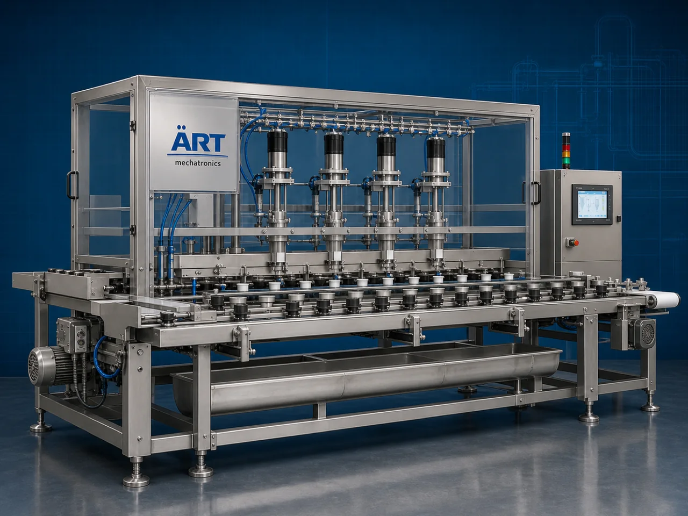

Seed Removal Machine (Industrial Deseeding & Seed Separation System)
A Seed Removal Machine, also known as a Deseeding Machine, Seed Separation Machine, Fruit Seed Remover, or Industrial Seed Extraction System, is an advanced industrial processing solution designed for seed removal, deseeding, pulp separation, material cleaning, seed extraction, and high-speed food processing operations for fruits, vegetables, chillies, spices, tomatoes, dates, berries, agro products, herbal materials, and industrial food ingredients.

About the Seed Removal
Seed removal systems are widely used for:
- Fruit deseeding operations
- Vegetable seed separation
- Chilli seed removal
- Tomato seed extraction
- Date seed separation
- Pulp and seed processing
- Agro material cleaning
- Food ingredient preparation
The machine improves:
- Product purity
- Processing efficiency
- Product consistency
- Labor reduction
- Food hygiene standards
- Material quality
- Industrial productivity
Industrial seed removal machines use:
- Precision separation mechanisms
- Vibratory and rotary systems
- Pulp separation technology
- PLC and HMI automation controls
- Conveyor synchronized handling systems
to automatically separate seeds and unwanted particles with superior accuracy and high production efficiency.
Seed removal machines are widely used in industries such as:
Food processing industries Fruit processing industries Vegetable processing industries Spice industries Agro industries Herbal industries Frozen food industries Nutraceutical industries
where clean processing, product purity, and high-speed industrial production are essential.
The machine is highly suitable for:
- Fruit deseeding operations
- Vegetable seed separation
- Chilli and spice processing
- Tomato pulp preparation
- Date processing systems
- Industrial food automation systems
ART Mechatronics offers high-performance seed removal machines, engineered for continuous industrial operation, hygienic food processing, precision seed separation, and reliable long-term industrial productivity.
Working Principle of Seed Removal Machine
- 1. Material Feeding & Loading Raw fruits, vegetables, or agro materials are automatically fed into processing chamber for separation operation.
- 2. Seed Separation & Deseeding Process Machine automatically separates seeds, pulp, fibers, and unwanted particles using rotary systems, vibration mechanisms, and precision separation technology.
Intelligent synchronization ensures smooth product handling and accurate seed removal operations.
- 3. Deseeding & Separation Operation Machine handles processing of: ✔ Tomatoes ✔ Chillies ✔ Dates ✔ Fruits ✔ Vegetables ✔ Berries ✔ Agro products ✔ Food ingredients
accurately and continuously.
- 4. Material Cleaning & Classification Process Machine performs: Seed removal Pulp separation Material grading Impurity removal Product cleaning Seed extraction
for efficient industrial food processing operations.
- 5. Intelligent Automation & Hygiene Integration Optional systems include: Dust extraction systems Automatic feeding systems Washdown compatible systems Food-grade stainless steel construction Safety guarding systems
- 6. Finished Product Discharge Processed materials discharged automatically for: Packaging operations Cooking systems Pulp processing Freezing operations Export shipment handling
Types of Seed Removal Machines
- 1. Fruit Deseeding Machine Designed for: ✔ Fruit seed removal and pulp processing applications
- 2. Chilli Seed Removal Machine Suitable for: ✔ Spice and chilli processing systems
- 3. Tomato Seed Separation Machine Uses: ✔ Tomato pulp preparation and food processing operations
- 4. Date Seed Removal Machine Designed for: ✔ Date processing and seed extraction systems
- 5. Servo Driven Seed Removal Machine Suitable for: ✔ Precision high-speed food processing operations
- 6. Fully Automatic Deseeding System Designed for: ✔ Complete industrial food processing automation lines
Industries Using Seed Removal Machines
🍅 Food Processing Industry Tomatoes, vegetables, fruits, and industrial deseeding systems. 🌶️ Spice Processing Industry Chilli seed separation and spice cleaning operations. 🍓 Fruit Processing Industry Fruit pulp preparation, berry processing, and seed extraction systems. ❄️ Frozen Food Industry Frozen vegetables, fruits, and ready-to-cook food preparation systems. 🌾 Agro Industry Agro material cleaning and food ingredient processing systems. 💊 Nutraceutical Industry Botanical material cleaning and herbal ingredient processing systems.
Features & Advantages
- High-speed automatic seed removal operation
- Accurate and reliable material separation systems
- Hygienic stainless steel industrial construction
- PLC and automation control systems
- Improves product purity and processing consistency
- Reduces manual cleaning dependency
- Supports multiple fruits, vegetables, and agro products
- Reliable long-term industrial performance
- Smooth integration with industrial food production lines
Technical Highlights
Machine Type: Seed removal machine Industrial deseeding system Food seed separation machine Material Compatibility: Tomatoes Chillies Dates Fruits Vegetables Berries Agro materials Integration: Rotary separation systems Vibratory systems Automatic feeding systems Washdown compatible systems Features: PLC control system Touchscreen HMI Stainless steel construction Material grading systems Continuous duty operation Applications: Seed removal Pulp separation Food cleaning Material grading Fruit processing Vegetable processing Automation: Semi-automatic Fully automatic industrial systems
Turnkey Deseeding Solutions
ART Mechatronics offers: Complete seed removal systems Automatic deseeding solutions Industrial food cleaning systems Food conveyor integration systems Installation & commissioning After-sales service & AMC
Why Choose Art Mechatronics
Expertise in industrial food processing and automation systems Customized deseeding solutions for multiple industries High-performance and hygienic separation technology Advanced PLC and automation systems Proven industrial food processing performance across sectors
Applications
Fruit Processing Plants Vegetable Processing Facilities Spice Manufacturing Units Frozen Food Industries Agro Product Processing Plants Industrial Food Processing Industries
Related Process Equipment machines
Get pricing & specs for the Seed Removal
Share the product, target capacity, current process and plant location. These details help our engineers discuss the right machine or line configuration.
One partner, from design to start-up
ART Mechatronics designs, manufactures, installs and commissions your Seed Removal solution with regional presence in India, UAE and Thailand.